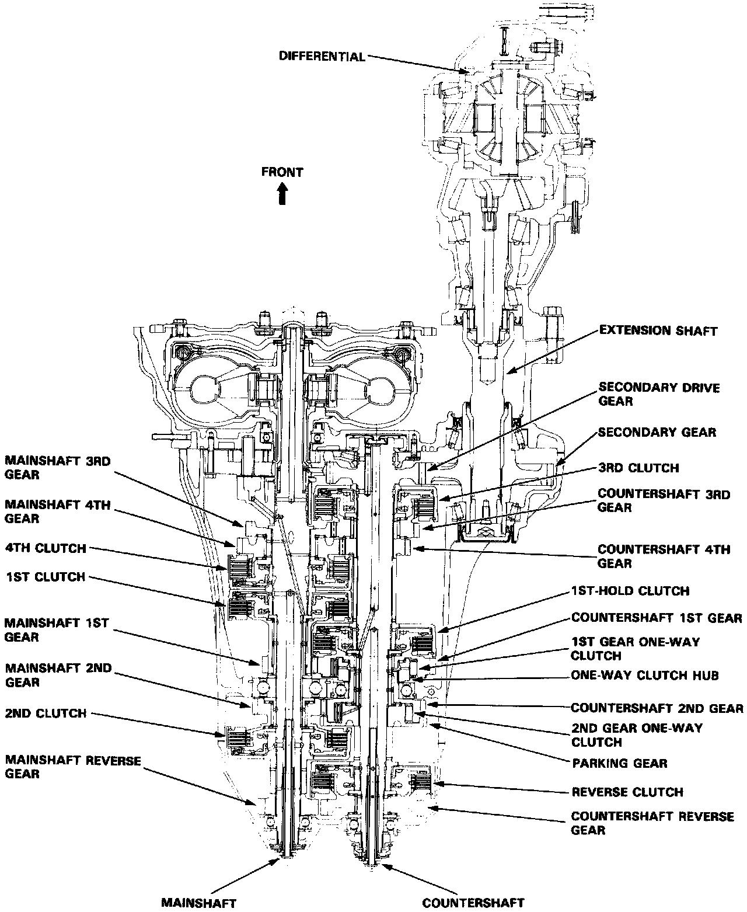
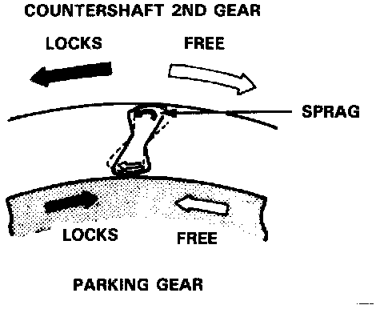
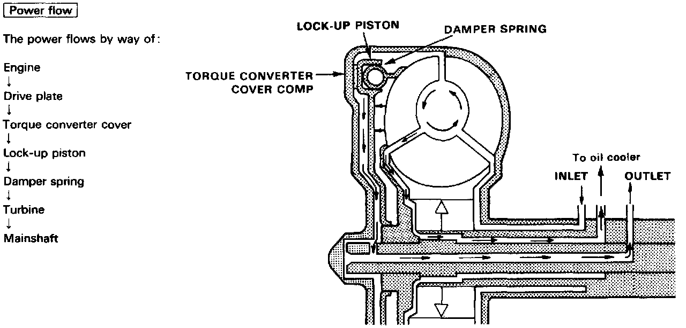
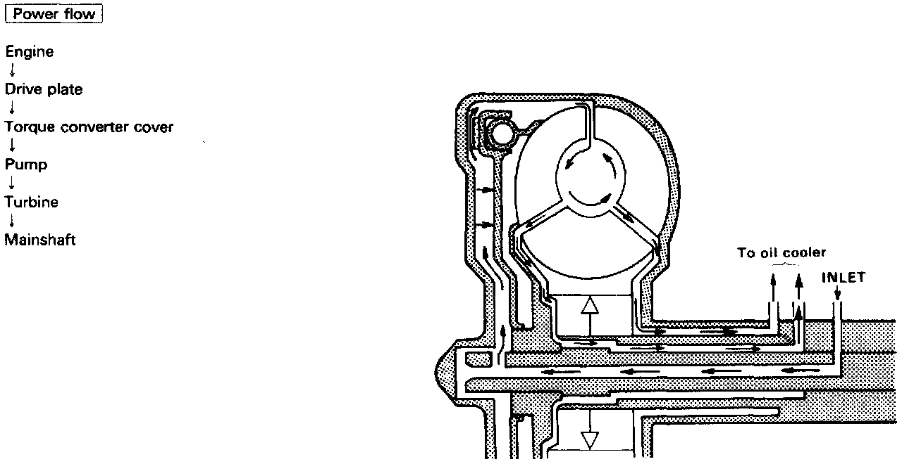

Clutches

Clutches
The Acura four speed automatic transmission uses hydraulically actuated clutches to engage or disengage the transmission gears. When clutch pressure is introduced into the clutch drum, the clutch piston is applied. This presses the friction discs and steel plates together, locking them so they don't slip. Power is then transmitted through the engaged clutch pack to its hub-mounted gear.
Likewise, when clutch pressure is bled from the clutch pack, the piston releases the friction discs and steel plates, and they are free to slide past each other while disengaged. This allows the gear to spin independently of its shaft, transmitting no power.
(1st Clutch]
The first clutch engages/disengages first gear, and is located at the right of center on the mainshaft. The first clutch is joined back-to-back to the fourth clutch. The first clutch is supplied clutch pressure by its oil feed pipe within the mainshaft.
[1st-hold Clutch]
The first hold clutch engages/disengages first hold, 1 position or 2 position, and is located at the center of the counter- shaft. The first hold clutch is supplied clutch pressure by its oil feed pipe within the countershaft.
[2nd Clutch]
The second clutch engages/disengages second gear, and is located at the right of the mainshaft. The second clutch is supplied clutch pressure by its oil feed pipe within the mainshaft.
[3rd Clutch]
The third clutch engages/disengages third gear, and is located at the end of the countershaft, opposite the rear cover. The third clutch is supplied clutch pressure by its oil feed pipe within the countershaft.
[4th Clutch]
The fourth clutch engages/disengages fourth gear, and is located at the left of center on the mainshaft. The fourth clutch is joined back-to-back to the first clutch. The fourth clutch is supplied clutch pressure by its oil feed pipe within the mainshaft.
[Reverse Clutch]
The reverse clutch engages/disengages reverse gear, and is located at the right of the countershaft. The reverse clutch is supplied clutch pressure by its oil feed pipe within the countershaft.

[One-way Clutch]
This transmission has two one-way clutches, the first gear one-way clutch and the second gear one-way clutch. The first gear one-way clutch is positioned between the first gear and the one-way clutch hub, with the one-way clutch hub splined to second gear. The first gear provides the outer race surface. The second gear one-way clutch is positioned between the second gear and the parking gear, with the parking gear splined to the countershaft. The second gear provides the outer race surface, and the parking gear provides the inner race surface. The one-way clutches lock up when power is transmitted from the mainshaft first gear to the countershaft first gear. The second gear one-way clutch locks up when power is transmitted from the mainshaft second gear to the countershaft second gear.
The first clutch and gears remain engaged in the 1st, 2nd, 3rd, and 4th gear ranges in the D3 or D4 position. However, the first gear one-way clutch disengages when the 2nd, 3rd, or 4th clutches/gears are applied in the D3 or D4 position. This is because the increased rotational speed of the gears on the countershaft over-ride the locking "speed range" of the one-way clutch. Thereafter, the one-way clutch freewheels with the first clutch still engaged.

Lock-up Clutch
1. Operation (clutch on)
With the lock-up clutch on, the oil in the chamber between the torque converter cover and lock-up piston is discharged, and the converter oil exerts pressure through the piston against the converter cover. As a result, the converter turbine is locked on the converter cover firmly. The effect is to bypass the converter, thereby placing the car in direct drive.

2. Operation (clutch off)
With the lock-up clutch off. the oil flows in the reverse of CLUTCH ON. As a result. the lock-up piston is moved away from the converter cover; that is, the torque converter lock-up is released.